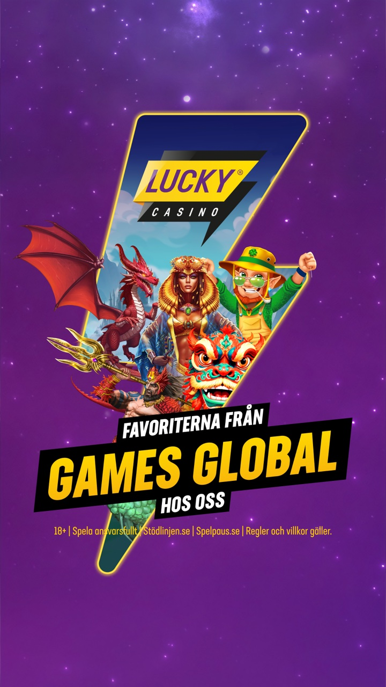
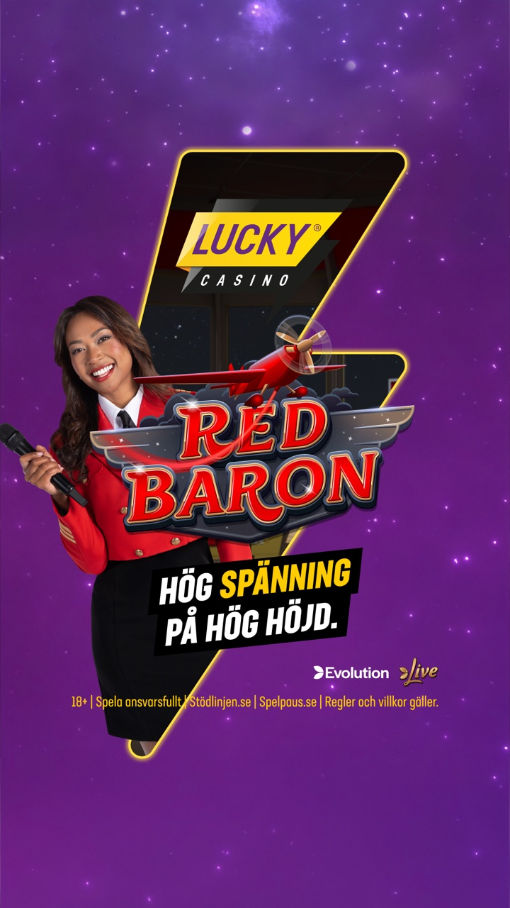

Lucky Casino
Jackpots and energy. Lucky ads are fast and loud, with tilted black text boxes, big numbers and the neon lightning bolt framing everything. I make Lucky’s paid social, streamer ads, seasonal campaigns and display banners.
- 967 000accounts reached by my most-seen Lucky ad
- 2.2Mcombined reach of my three most-seen Lucky ads
- Weeklystreamer ads from the Cartmens sponsorship
Most-seen ads
These are the Lucky ads Meta showed the most since I started. The Games Global ad ran as two ads that together reached almost two million accounts.
Reach from Meta’s public Ad Library: accounts in the EU that saw the ad at least once.


Streamer ads
Lucky sponsors the streamer Cartmens, and I turn his raw stream footage into Meta ads. I find the biggest reaction, put the game on top and the streamer below, and pull the captions from what he actually says. In our esports campaign the video I cut brought in more in deposits than it cost to run.
New streams come in every week, so I built an After Effects panel that turns one 16:9 cut into the 9:16 split and endcard automatically.
Campaigns & launches
Seasonal campaigns and game launches, plus AI-built scenes for Lucky Sport where I generated full stadiums and crowds in Figma Weave and finished everything in After Effects.
Display ads
Animated banners for acquisition and programmatic. One design per campaign, adapted to every size.
The Hopping Kiss big-win banner got about 68 000 impressions in its first week, and 31% of viewers watched it to the end.